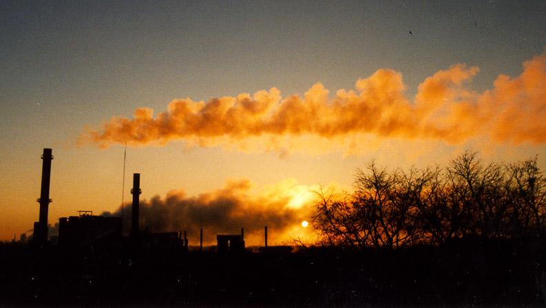

Even a "dirty" old smokestack can look pretty, if the sunlight is just right. The winds were really strong on this day.
Section Index | Main Menu | Homepage
Fair use of these photos for educational purposes is permitted.
© Richard Carlson
Even a "dirty" old smokestack can look pretty, if the sunlight is just right. The winds were really strong on this day. | |
|  | |
Section Index | Main Menu | Homepage Fair use of these photos for educational purposes is permitted. | |
|---|---|